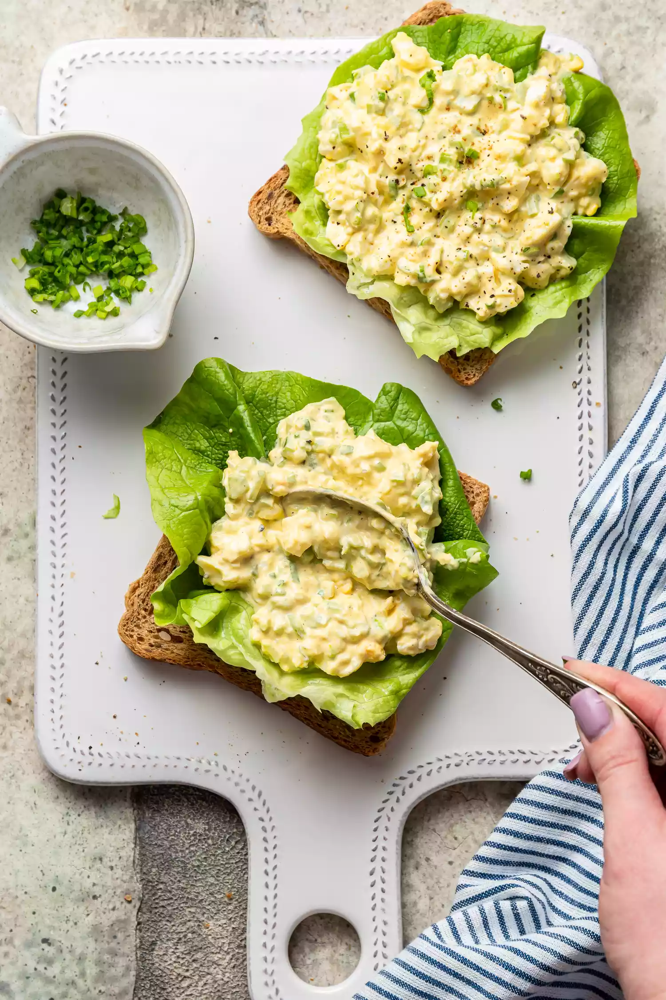

Простий рецепт на швидкий сніданок - яєчні бутерброди
Звичайно, є багато різних способів приготування яєчних бутербродів, але ось один з найпростіших рецептів:
Інгредієнти:
- 2 шматки хліба
- 2 яйця
- 2 шматочки шинки або бекону (опціонально)
- 2 шматочки сиру (опціонально)
- 1 столова ложка масла або вершкового масла
- Сіль та перець за смаком
Етапи приготування:
- Розтопіть масло на сковороді на середньому вогні.
- Якщо ви використовуєте шинку або бекон, покладіть її на сковороду та смажте до золотистого кольору. Потім вийміть зі сковороди та поставте на тарілку.
- Розбийте яйця в миску та добре перемішайте вилкою. Додайте сіль та перець за смаком.
- Покладіть хліб на сковороду. Якщо вам подобається сир на бутерброді, покладіть шматочки сиру на хліб.
- Покладіть яєчну суміш на сковороду поряд з хлібом.
- Як тільки яйця почнуть твердіти на дні сковороди, використайте лопатку або ложку, щоб перевернути хліб разом із яйцем на інший бік.
- Продовжуйте смажити, доки яєчна суміш та хліб не стануть золотистого кольору.
- Вийміть бутерброд із сковороди та покладіть на тарілку. Додайте шматочки шинки або бекону, якщо використовували.
- Повторіть процес для другого бутерброду.
- Подаємо гарячим із улюбленим напоєм.
Смачного!